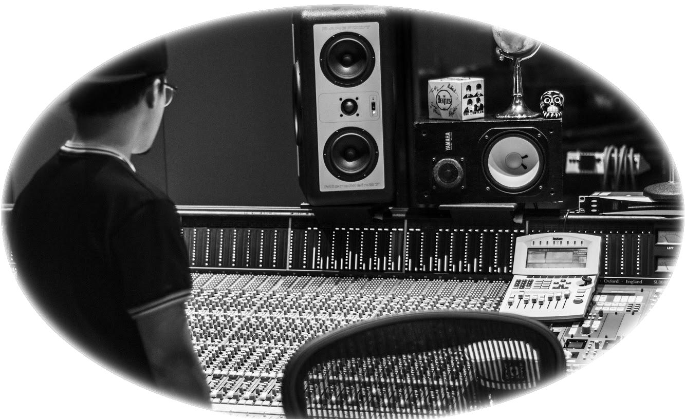

Side Banner

About Me Part 1
Once upon a time, a creative understood his path.
This creative was comfortably ingrained in the independent music community.
His name is David Gonzales, although his intended name was Ramon.
One day, David quit making music due to mental illness.
He lost all his momentum; and for many moons, he wallowed in an identity-based confusion which stagnated his creativity.
He attempted to break free from those chains by engaging in multiple creative projects over the years, turning him into a creative nomad with no home to base himself from.
The outcome of his works seeming as if he is trying to communicate through a language he does not understand.
This only frustrated him, and contributed to his overwhelming feeling of constant block.
A creative by heart, he knows nothing else but to create.
About Me Image
About Me Part 2
With no means to create, all he wanted to do is scream to the void - but, it was as if he had no mouth.
He started violently scribbling; and kept going until the pen was piercing through, voraciously gutting the canvas he carefully set-up in calmer times.
A feeling he felt once again while making this horrible excuse of an art portfolio.
Thus, in the fires of uninspiration, the idea of the Chaos Canvas was born:
An idea so obviously staring him in the face as he was scribbling away, wondering what he should do for his project. The Chaos Canvas is a means to scribble to his hearts content, and digitally store creative projects.
A way to sow order in the chaos, so to speak.
After all, an artist's greatest flaw - and asset - is their disordered mind.
To quell the chaos is to lose the passion, but to maintain no order is to lose sense of self.